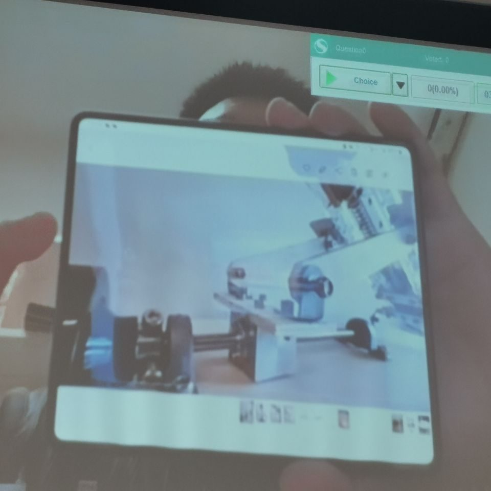

发射机构设计与弹道动力学建模
动力学课程的设计 + 实验项目：设计一套发射机构，并通过频闪相机实验标定空气阻力系数，用于对抛射体弹道做动力学建模与预测。
项目背景
课程要求把质点 / 刚体运动学与动力学理论用于真实机构。本组设计发射机构并研究抛射体弹道，其中空气阻力是预测落点的关键不确定量，因此需要用实验把阻力系数标定出来。
我的具体工作
- 机构设计：参与发射机构设计——发射体、限位卡扣、触发与击发结构、底座与侧板等部件。
- 阻力系数实验：用频闪相机拍摄乒乓球竖直下落，将各时刻图像拼接，逐点测速、求加速度，结合受力方程反解空气阻力系数。
- 误差分析：分析乒乓球过轻、竖直气流扰动、频闪测量为估计值等误差来源。
- 动力学建模：将标定的阻力系数代入弹道模型预测发射轨迹。
技术与工具
质点运动学 / 动力学、抛体 + 空气阻力建模、频闪摄影测量、数据处理（差分求速度 / 加速度）、误差分析、机构设计。
项目图片

点击图片可查看大图。
姚涵非 · 返回主页